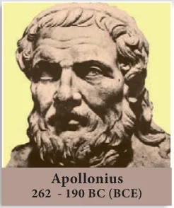
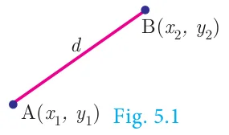
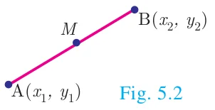
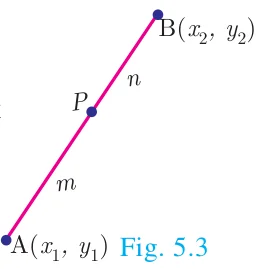
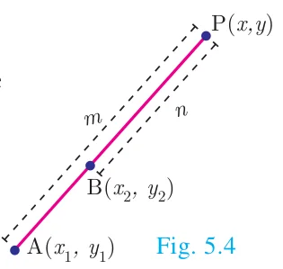
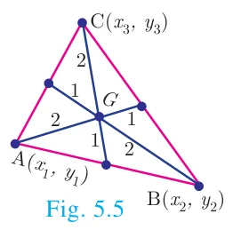

5 COORDINATE GEOMETRY
“A line is breadthless length” – Euclid

Apollonius was born at Perga, in modern day Turkey. His greatest work was called “conics” which introduced curves like circle, parabola geometrically. He wrote six other books all related to the basics of modern day coordinate geometry.
His ideas were applied to study planetary theory and solve practical problems. He developed the sundial and contributed to other branches of science using his exceptional geometric skills. For this reason, Apollonius is hailed as “The Great Geometer”.
Learning Outcomes
- To find area of a triangle formed by three given points.
- To find area of a quadrilateral formed by four given points.
- To find the slope of a straight line.
- To determine equation of a straight line in various forms.
- To find the equation of a line parallel to the line \(ax + by + c = 0\).
- To find the equation of a line perpendicular to the line \(ax + by + c = 0\).
5.1 Introduction
Coordinate geometry, also called Analytical geometry is a branch of mathematics, in which curves in a plane are represented by algebraic equations. For example, the equation \(x^2 + y^2 = 1\), describes a circle of unit radius in the plane. Thus coordinate geometry can be seen as a branch of mathematics which interlinks algebra and geometry, where algebraic equations are represented by geometric curves. This connection makes it possible to reformulate problems in geometry to problems in algebra and vice versa. Thus, in coordinate geometry, the algebraic equations have visual representations thereby making our understanding much deeper. For instance, the first degree equation in two variables \(ax + by + c = 0\) represents a straight line in a plane. Overall, coordinate geometry is a tool to understand concepts visually and created new branches of mathematics in modern times.
In the earlier classes, we initiated the study of coordinate geometry where we studied about coordinate axes, coordinate plane, plotting of points in a plane, distance between two points, section formulae, etc. All these concepts form the basics of coordinate geometry. Let us now recall some of the basic formulae.
Recall
Distance between two points

Distance between two points \(A(x_1, y_1)\) and \(B(x_2, y_2)\) is
\(|AB| = d = \sqrt{(x_2 - x_1)^2 + (y_2 - y_1)^2}\,.\)
Mid-point of line segment

The mid-point \(M\), of the line segment joining \(A(x_1, y_1)\) and \(B(x_2, y_2)\) is \(\left(\dfrac{x_1 + x_2}{2}, \dfrac{y_1 + y_2}{2}\right)\).
Section Formula
Internal Division

Let \(A(x_1, y_1)\) and \(B(x_2, y_2)\) be two distinct points such that point \(P(x, y)\) divides \(AB\) internally in the ratio \(m:n\).
Then the coordinates of \(P\) are given by \(\left(\dfrac{mx_2 + nx_1}{m + n}, \dfrac{my_2 + ny_1}{m + n}\right)\).
External Division

Let \(A(x_1, y_1)\) and \(B(x_2, y_2)\) be two distinct points such that the point \(P(x, y)\) divides \(AB\) externally in the ratio \(m:n\).
Then the coordinates of \(P\) are given by \(\left(\dfrac{mx_2 - nx_1}{m - n}, \dfrac{my_2 - ny_1}{m - n}\right)\).
Centroid of a triangle

The coordinates of the centroid \(G\) of a triangle with vertices \(A(x_1, y_1)\), \(B(x_2, y_2)\) and \(C(x_3, y_3)\) are given by \(\left(\dfrac{x_1 + x_2 + x_3}{3}, \dfrac{y_1 + y_2 + y_3}{3}\right)\).
Progress Check
- Complete the following table.
S.No. Points Distance Mid Point Internal External Point Ratio Point Ratio (i) \((3, 4), (5, 5)\) 2:3 2:3 (ii) \((-7, 13), (-3, 1)\) \(\left(-\dfrac{13}{3}, 5\right)\) \((-13, 15)\) - \(A(0, 5)\), \(B(5, 0)\) and \(C(-4, -7)\) are vertices of a triangle then its centroid will be at \(\underline{\qquad}\).